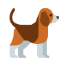

ONU - AYUDA A UN PELUDO
Se parte de nuestra comunidad adoptando a un animalito
y asi poder entregarles el amor que necesitan.
Por el momento solo contamos con perros y gatos,
estamos trabajando para poder rescatar mas animalitos
con el fin de que encuentren una familia y puedan recibir amor y cariño
NUESTROS INTEGRANTES
•Cristobal Rozas - Entrenador
•Camila Rua - Veterinaria
•Dylan Soto - Cuidador
NUESTROS ANIMALITOS
 Perros
 Gatos
Gatos